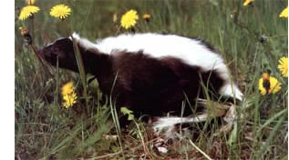
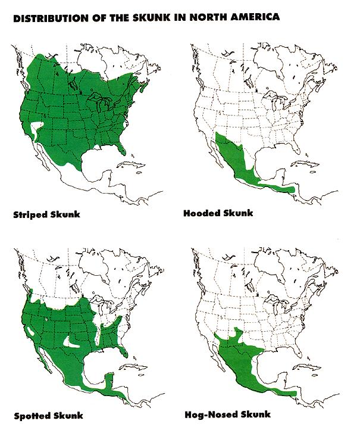
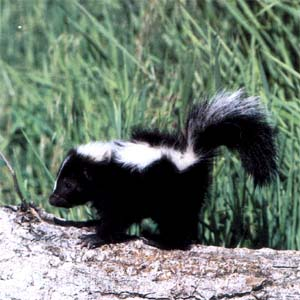

That which we call a skunk, by any other name would still smell
A NEIGHBOR ON THE MOUNTAIN here had quite an adventure this past winter.
Dick lives in a cabin that juts out sharply from a steep slope and is supported on its downhill side by tall foundation stilts. With the ample subfloor area sided in and insulated with battings of fiberglass, the resulting crawl space is dark, dry, and warm. It is these attractions that have made the place a mecca for wild things that tunnel their way in and pull the insulation from the walls for nests. The invaders include mice, pack rats, and others.
It was one of the others that cost Dick several nights' sleep and led him to become a reluctant local legend.
Resigned to battling rodents as part of the country lifestyle, Dick kept his crawl space mined with an array of mouse- and rattraps, all well baited and checked regularly. Late one December night while Dick, his wife, and their dog slept, a skunk got under the cabin and did its worst.
Groggy, unwilling to leave his warm bed and go out into the cold night on a wild skunk chase, Dick promised he'd see to it come morning, then buried his face in the blankets and suffered through the remainder of the night while his wife mumbled unpleasantries and their dog sneezed and whined.
A striped skunk relaxes in a Montana dandelion field. Cute as the image is, the skunk probably game to snack rather than to smell.
Up at daylight, Dick went down and propped open the crawl-space door. No skunk in sight. He left the door open and went to work. That evening, a flashlight in one hand, the other holding a kerchief over his face, he ventured in. The evidence was plain enough. The skunk had tunneled in under the back wall directly below the bedroom, then run amok, shredding insula tion from the walls, fuming over garden tools and paint cans, and, in the process, setting off a mousetrap-which, Dick guessed; was what had prompted the big stink.
My neighbor repaired and rehung the torn insulation battings, filled in the skunk's shallow entrance hole, and placed a mousetrap near the patch. Should the pest return and try to enter at the same spot again, Dick figured, it would land a paw in the trap while digging in, which should scare it away.
A couple of nights later the skunk came back, and Dick's plan worked, all too well.
When the trap clapped shut, it scared the skunk off, all right, but not before the startled animal fired a farewell salute. This time the cabin and its contents, including the clothes hanging in the bedroom closet, were so thoroughly permeated that for days thereafter people wrinkled their noses and made impolite comments when Dick or his wife walked past. And this after airing the place thoroughly and laundering every garment they owned. Even the family dog, a house hound by preference, took to spending most of his time out in the woods.
Clearly, something had to be done.
Toward that end, my neighbor again backfilled the skunk tunnel, this time reinforcing the packed earth with a cinder block. Then he put out a large box of rat poison.
A few nights later, the persistent skunk returned and again fired off its dreadful load. Dick's wife threatened to leave home. The dog did leave home. A check the next morning revealed that the skunk had dug in at a new location and devoured the entire box of poison before disappearing. But no traps had been tripped, and why the animal had sprayed was a mystery.
A pistol in one hand, a flashlight in the other, and a kerchief over his face, he crouched into the crawl space.
The stench eventually faded, and for the next several weeks my neighbors thought they had finally put an end to the big stink. Then one warm, early spring afternoon the dreaded perfume once again came wafting up from beneath the cabin, smelling worse than ever. The skunk was back. Or, more likely, a replacement had arrived. In broad daylight, no less. It must be down there now.
Without a word, Dick got out his .22 target pistol, stuffed the clip with hypervelocity, hollow-point ammunition, and jacked a round into the chamber. With the pistol in one hand, a flashlight in the other, and a kerchief tied over his face, he crouched into the crawl space and followed his nose to a pile of boxes stacked in a cobwebby back corner. Carefully approaching the spot, he inched the boxes aside and saw, lying curled and apparently asleep on a nest of pink fiberglass, a small striped skunk. Resigned, he aimed and fired. The skunk jerked and Dick fired again, before the animal had a chance to rally and shoot back.
After poking his victim with a shovel to be certain it was agreeable to being handled, Dick reached over and grabbed the big black-and-white tail . . . which came away in his hand.
After he regained control of his stomach, my neighbor braced himself and rolled the corpse over with his shovel. It was rotten, boiling with maggots. Obviously, it had been dead for a very long time. That jerk after the first shot was no death spasm, as Dick had thought, but a mere inanimate reaction to the shock of the close-range bullet's impact. There was no option; my mortified neighbor scooped up the mess with his shovel, carried it out, and buried it deep and well away from the cabin.
As he later explained it to me, he reckoned that the skunk, after pigging out on poison, had sickened and retreated to the hidden nest in the corner. There, it fired off one last barrage in protest, and expired. After a while the stench had faded, returning only when decomposition got around to spilling the contents of the musk glands.
Too bad for Dick, his wife, and their dog (not to mention the skunk) that he didn't know more about this amiable, interesting species and its habits, for he could easily have discouraged it from wanting to nest in his crawl space, thereby avoiding the big stink. Several times.
AMERICA'S SKUNKS BELONG TO THE subfamily Mephitinae (from the Latin mephi tis, meaning poison gas), which comprises three genera. Between them, the three fairly blanket the lower 48 states, Canada to Mexico and sea to shining sea.
The most numerous of this fetid trio, and the one that raised such a stink with my neighbor, is the striped skunk, a stocky, short-legged, long-haired animal whose jet black coat is trimmed with two wide white stripes running up the back and converging at the nape. A single thin white line descends from forehead to nose. The tail is almost as long as the body and lushly furred, with a blurred white stripe along its top. Since it ranges across all of the U.S. save parts of Utah, Nevada, and southern California, this is the skunk you're most likely to see. And smell.
A sister species to the striped skunk (they share the same genus) is the hooded skunk, a two-toner with white head, back, and tail, and black undercarriage. (There's also a nearly all-black phase.) Its range in the U.S. is restricted to the southern portions of Arizona, New Mexico, and Texas.
It's cuddly as a kitten, but not to be petted. In addition to its famous odor, a skunk can carry rabies.
Next in abundance is the little spotted skunk, a smaller, slimmer, sleeker animal built much like a weasel-to which family (Mustelidae) all skunks in fact belong. Although commonly called a civet cat, the spotted skunk is no more a civet (which is an inhabitant of Asia and Africa) than the prong horn-is an antelope. F or that matter, the spot ted skunk isn't truly spotted, either, but marked with a hodgepodge of blurred stripes and splotches, the pattern varying more or less among individuals. The spotted skunk ranges across most of the southern and western United States.
The rarest of our stinkers (though some would say not nearly rare enough) is the hognosed skunk, an emigrant from Mexico. The hog-nose resembles the striped skunk in size and shape, and the hooded skunk in range (portions of Texas, New Mexico, Colorado, Arizona, and a tiny bit of Nevada). Its snout looks pretty much like what its name implies. Its back is marked with two wide white or y ellowish stripes, or it may be solid white.
By and large, all three genera share the same habits, appetites, and dispositions, and so can be discussed as one-with the exception that the spotted skunk, with its streamlined build, is far more energetic and athletic than its rotund cousins. (For a couple of examples, it can climb trees, which the others can't, and is said to perform a handstand just before or while spraying.)
Of course, what makes a skunk a skunk, no matter its genus or species, is the tear-gas musk it can jet, on demand, from twin events located on either side of the rectum. When the tail comes up, these normally retracted nipples protrude, ready for action.
My comparison of skunk musk to tear gas is no mere metaphor; I've been doused a couple of times with each, and-though tear gas (known technically as CN) is in fact a gas, while skunk musk is a thick, yellowish liquid, and their active ingredients differ-I can draw no clear distinction between their ef fects. Both cause extreme irritation to eyes and sinuses. Both interfere with respiration. Both bring on nausea, headache, and uncontrollable tearing, nasal drainage, and salivation. And both, with a direct hit to the eyes, can cause temporary blindness. Tear gas, however, is far less malodorous, quicker to fade, and easier to wash off than is skunk musk.
For a tail gunner, the skunk's aim is superb. And it always aims for an enemy's eyes. The animal can fire its twin weapons singly or in unison, with an accurate range of eight to 10 feet (less if shooting into a stiff breeze, more if the target is downwind). Several rounds of a few drops each (that's all it takes) can be discharged in rapid succession before the ammunition pouches are depleted.
A popular misconception holds that the skunk can shoot only straight back. In fact, the animal rarely sprays directly to its rear, preferring a slightly angled stance so that it can keep an eye on its target. According to credible reports, in a real pinch the striped skunk can even hump up and fire over its own back while facing the threat.
A good thing it is, then, that the skunk isn't trigger-happy. Unless surprised at very close range or pushed too hard too fast, the easy go ing creature almost always gives you three warnings before resorting to its sole and essential means of self-defense. So long as a skunk is moving away or paying you no mind, you're safe. But if the animal stops suddenly, turns to face you, and stamps its forepaws, consider yourself cautioned. If you continue to advance or otherwise behave in a threatening manner (throwing rocks will do it), the skunk will turn away and erect its tail, save for the tip, which will remain drooped. The animal may also hiss. You have now been warned. If and when the tip of the tail snaps to attention and spreads, you have received your third and final warning, a threat. If you're within range, it's now too late to turn and run or try to back away; rather, freeze in your tracks, try to relax, divert your eyes, turn your face slowly away, say something friendly in a soft tone, and hope the skunk accepts these gestures of acquiescence.
But it might not, so it's handy to know what can be done to limit the damage should you, a companion, or a pet get hit with the big stork.
First, to minimize contact of the musk with your skin (it's acidic and can burn), remove any sprayed garments. Second, if water is available, wash the affected area (generally the face and eyes) immediately and thoroughly. And third, deodorize.
A tomato-juice rubdown is the best known of the folk "deskunkers," and it works, sort of. For those of us who can chase the tomato scrub with a hot shower, it's OK. But for a dog or cat that you have no intention of taking into the house, much less the shower, tomato juice isn't so wonderful. I had occasion to try this treatment on my big, longhaired mutt a couple of summers back, and it did help to neutralize the stench and ease his suffering. But the thick, sticky juice also made an impossibly matted mess of his coat, necessitating an outdoor washtub bath that neither of us enjoyed.
Other home remedies include mustard, vinegar, and diluted chlorine bleach.
But what if you're way off somewhere in the boonies and fresh out of tomato juice, mustard, vinegar, and bleach? In that case, build a small fire and stand (or hold your pet) in the smoke of burning grass, hay, juniper, or cedar. Similarly, owners of woodstoves can help freshen a skunked house by build ing a slow fire of cedar or juniper, then closing the top damper and opening the stove door so that the fragrant smoke fills the room. (Neither of these sister woods contains pitch or other resins, so, unless you drastically overdo it, you needn't worry about smoke damage.)
Skunks consume many insect and rodent pests . . . as well as garden crops, eggs, and young domestic fowl.
The obvious problem with most of these home detoxifiers is that the cure can be nearly as unpleasant as the curse. Therefore, anyone whose profession or recreation puts them at high risk of being skunked, or who has children or pets that enjoy running wild in the woods, would do well to purchase and keep at the ready a small squeeze bottle of one of the clean, very effective commercial skunk antidotes, such as Skunk Stuff or Skunk Off'.
For good reason, skunks never employ their musk when quarreling amongst themselves. Neither do they use it to subdue prey. Rather, like their weasel cousins, they go for the necks of rivals and prey with their hunter's teeth. An example:
I was bowhunting up the slope of a brushy ridge one evening this past autumn, sneaking along in hopes of catching a glimpse of something with antlers and good lean meat. Sensing movement just behind and off to my left, I froze and slowly turned my head for a peek. What I saw was no deer or elk, but a very large and beautiful striped skunk, out and about somewhat early for a primarily nocturnal species. The animal was insoucianteither unaware of my camouflaged presence or totally uncaring as it went about its business of sniffing around for dinner. I allowed my fellow hunter to pass, then followed along behind at a distance of a few yards. The animal trailed not the slightest trace of odor.
This skunk's hunting technique, typical of the genus, involved zigzagging its way from downed log to downed log, rooting along the edges of each in search of something edible. Once, it came up with a vole in its mouth, which it promptly tossed down whole. I would have guessed that a skunk would torment its food for a while, catlike, before consuming it. But the tiny rodent had been caught, killed, and swallowed all in a toothy flash. No cat's play there; just the serious business of survival.
Skunks are opportunistic feeders, omnivorous and less meat-minded than most other members of the weasel family. While mice, voles, shrews, rats, and other small mammals are significant in the skunk's diet, it also consumes a wide variety of vegetables, and its favorite food, at least during the warm months, is insects. Especially relished are grasshoppers, crickets, beetles, and members of the wasp clan. Reports are abundant of individual skunks devouring several hundred insect pests in a single day.
Concerning reputation: While it's true that a skunk will occasionally pilfer the eggs and young of wild and domestic fowl, it much prefers the eggs of the snapping turtle and will consume all it can sniff out and exhume from the mud in which they're deposited. In the big picture, then, the skunk is of great benefit to both humankind and nature, and only a minor and occasional nuisance.
Still, while it would be a serious moral and ecological mistake to condemn skunks a priori as bad guys and gun down every one we see, it's nevertheless sometimes necessary to eliminate a persistent troublemaker. When hit with a well-placed shot, a skunk will generally die before it has time to muster a reprisal.
If you're not a shooter, you can easily catch a marauding skunk in a live trap; they're trusting creatures and come readily to baits such as meat or sweets. The capture accomplished, approach slowly, cover the trap and its inmate with an old blanket, and transport the works to a suitable release site several miles distant. (Around here, a preferred drop zone is near the headquarters of a particularly unconscionable land developer.) Don't worry: Skunks have learned down through the ages that it's unwise to spray while inside a den or other dark, confined space (they have no special defense against their own offense) and seem to extend this instinctive selfrestraint to covered traps and cages as well. So long as you handle your prisoner gently, there is little to fear.
If it's an egg or poultry thief you're up against, you can skunk-proof your coop by siding it with metal roofing or plywood from a foot belowground (to prevent digging) up to a height of at least three feet; while skunks can scoot right up and over a wire fence, they can't climb a hard, smooth surface.
When skunks work their way under a building, like into my neighbor's crawl space, they're not, looking so much for food as for a dark, secure place to snooze through the day or lay low for the winter (they're not bona fide hibernators, but take extended naps between occasional nocturnal outings). Therefore, a quick, easy, inexpensive, and almost sure defense against subfloor skunk invaders is a light. If a crawl space isn't dark, it just doesn't feel like home to a skunk. For added protection, you can sprinkle mothballs on the ground around the inside of the foundation. Skunks don't like mothballs. They stink. Finally, avoid using spun fiberglass for crawl-space insulation, since it seems to be an irresistible nestbuilding material.
Too bad my neighbor Dick didn't know about these little tricks. If he had, he could have spared himself and his family the big stink. Several times.
And, more important, he could have avoided becoming locally celebrated as the man who gunned down a dead skunk. Twice.
THE SKUNK IS THE PRIMARY WILDlife carrier of rabies in the contiguous United States (raccoons are second). According to Dr. Thomas Eng of the Centers for Disease Control in Atlanta, during the years 1980 through 1988, an average of 2,814 cases of rabies in skunks were confirmed annually. Although most common in the Midwest and West, none of the lower 48 states is completely free from the threat.
Thankfully, the old rabies torturetreatment involving 13 painful injections to the stomach has been superseded by a modern prophylaxis that requires only five shots in the arm and is 100°70 effective when administered promptly. Still, a close encounter with rabies is a thrill worth avoiding.
Rabid wild animals, skunks or otherwise, rarely pose a direct threat to humans. More often, dogs and cats that haven't been inoculated against the disease contract it when pestering an infected wild animal, then pass it along to humans. Thus, the first line of rabies defense is to have your pets vaccinated in accordance with local law (and see to it that your neighbors follow suit). Do that, and avoid handling or harassing wild animals, and the threat of contracting rabies, which is already minor, can be virtually eliminated.
|
 |
 |
 |